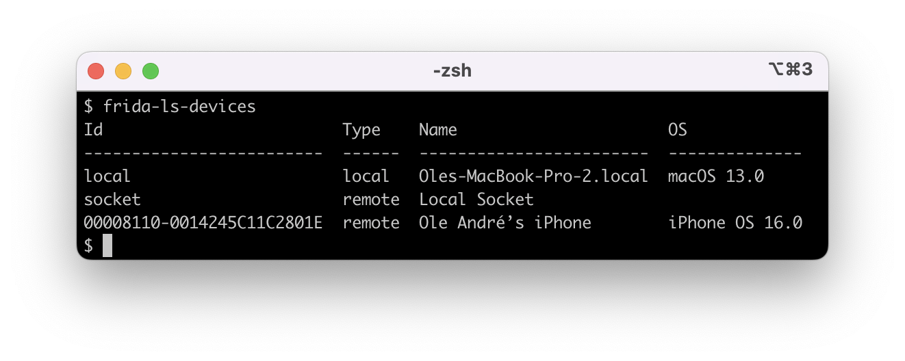

Frida 16.0.3 Released ∞
release oleavr
oleavr
Some cool new things this time. Let’s dive right in.
tvOS and watchOS
One of the exciting contributions this time around came from @tmm1, who opened a whole bunch of pull-requests adding support for tvOS. Yay! As part of landing these I took the opportunity to add support for watchOS as well.
This also turned out to be a great time to simplify the build system, getting rid of complexity introduced to support non-Meson build systems such as autotools. So as part of this clean-up we now have separate binaries for Simulator targets such as the iOS Simulator, tvOS Simulator, etc. Previously we only supported the x86_64 iOS Simulator, and now arm64 is covered as well.
macOS 13 and iOS 16
Earlier this week, @hsorbo and I did some fun and productive pair-programming where we tackled the dynamic linker changes in Apple’s latest OSes. Those of you using Frida on i/macOS may have noticed that spawn() stopped working on macOS 13 and iOS 16.
This was a fun one. It turns out that the dyld binary on the filesystem now looks in the dyld_shared_cache for a dyld with the same UUID as itself, and if found vectors execution there instead. Explaining why this broke Frida’s spawn() functionality needs a little context though, so bear with me.
Part of what Frida does when you call attach() is to inject its agent, if it hasn’t already done this. Before performing the injection however, we check if the process is sufficiently initialized, i.e. whether libSystem has been initialized.
When this isn’t the case, such as after spawn(), where the target is suspended at dyld’s entrypoint, Frida basically advances the main thread’s execution until it reaches a point where libSystem is ready. This is typically accomplished using a hardware breakpoint.
So because the new dyld now chains to another copy of itself, inside the dyld_shared_cache, Frida was placing a breakpoint in the version mapped in from the filesystem, instead of the one in the cache. Obviously that never got hit, so we would end up timing out while waiting for this to happen.
The fix was reasonably straight-forward though, so we managed to squeeze this one into the release in the last minute.
Compiler improvements
The frida.Compiler just got a whole lot better, and now supports additional configuration through tsconfig.json, as well as using local frida-gum typings.
V8 debugger
The V8 debugger integration was knocked out by the move to having one V8 Isolate per script, which was a delicate refactoring needed for V8 snapshot support. This is now back in working order.
Dependency upgrades
One of the heavier lifts this time around was clearly dependency upgrades, where most of our dependencies have now been upgraded: from Capstone supporting ARMv9.2 to latest GLib using PCRE2, etc.
The move to PCRE2 means our Memory.scan() regex support just got upgraded, since GLib was previously using PCRE1. We don’t yet enable PCRE2’s JIT on any platforms though, but this would be an easy thing to improve down the road.
Cross-post: frida-tools 12.0.2
We also have a brand new release of frida-tools, which thanks to @tmm1 has a new and exciting feature. The frida-ls-devices tool now displays higher fidelity device names, with OS name and version displayed in a fourth column:

To upgrade:
$ pip3 install -U frida frida-toolsEOF
There are also some other goodies in this release, so definitely check out the changelog below.
Enjoy!
Changelog
- darwin: Add support for watchOS and tvOS. Thanks @tmm1!
- darwin: Fix early instrumentation on macOS 13 and iOS 16. (Thanks for the pair-programming on this one, @hsorbo!)
- interceptor: Suspend threads while mutating pages on W^X systems such as iOS. This improves stability when instrumenting busy processes.
- system-session: Re-enable Exceptor for now.
- compiler: Allow configuring target, lib, and strict.
- compiler: Fix support for local frida-gum typings.
- compiler: Use latest @types/frida-gum from git.
- ci: Drop prebuilds for Node.js 10.
- ci: Publish prebuilds for Node.js 19.
- ci: Publish prebuilds for Electron 21 instead of 20.
- unw-backtracer: Improve accuracy on 32-bit ARM.
- thread: Add suspend() and resume() to the Gum C API.
- darwin: Improve handling of chained fixups.
- darwin: Fix Objective-C symbol synthesis on arm64e.
- linux: Detect noxsave on Linux.
- linux: Improve injector to handle faux .so mappings. Thanks @lx866!
- module-map: Support lookups with ptrauth bits set.
- gumjs: Add NativeFunction traps: ‘none’ option. Thanks @mrmacete!
- gumjs: Prevent File and SQLite APIs from triggering Interceptor. Thanks @mrmacete!
- gumjs: Hold Isolate lock while performing V8 jobs.
- gumjs: Fix deadlock on V8 script teardown.
- gumjs: Fix V8 debugger not seeing loaded scripts.
- gumjs: Fix CModule external toolchain support on Darwin/arm64e.
- gumjs: Fall back if V8 MAP_JIT fails on Darwin.
- gumjs: Do not freeze V8 flags after init, to avoid issues with hardened processes on Darwin.
- socket: Upgrade to libsoup 3.x for HTTP/2 support.
- devkit: Add .gir to the frida-core kit. Thanks @lateralusd!
- devkit: Update examples to the current Device API.
- python: Support UNIX socket addresses everywhere.
- node: Fix Node.js v19 compatibility.
- deps: Upgrade most of the dependencies to the latest and greatest.
- build: Refactor to get rid of non-Meson cruft.